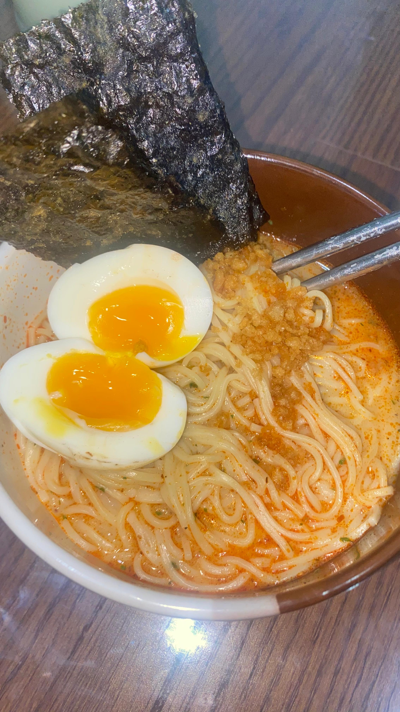
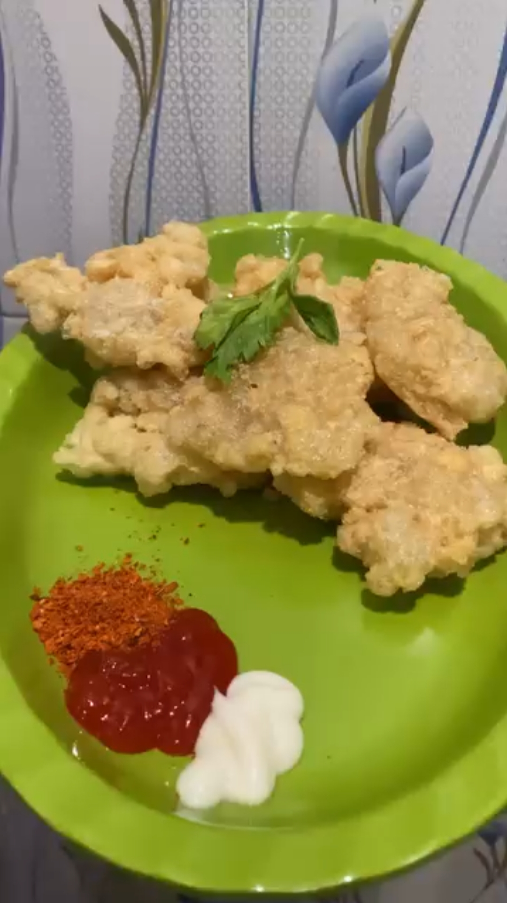
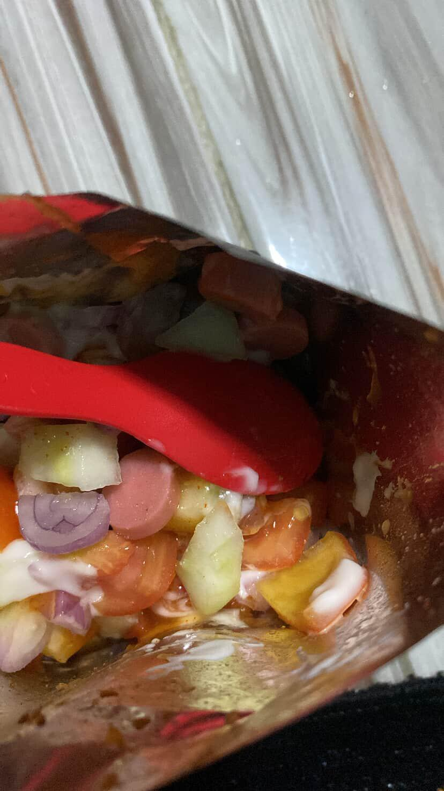
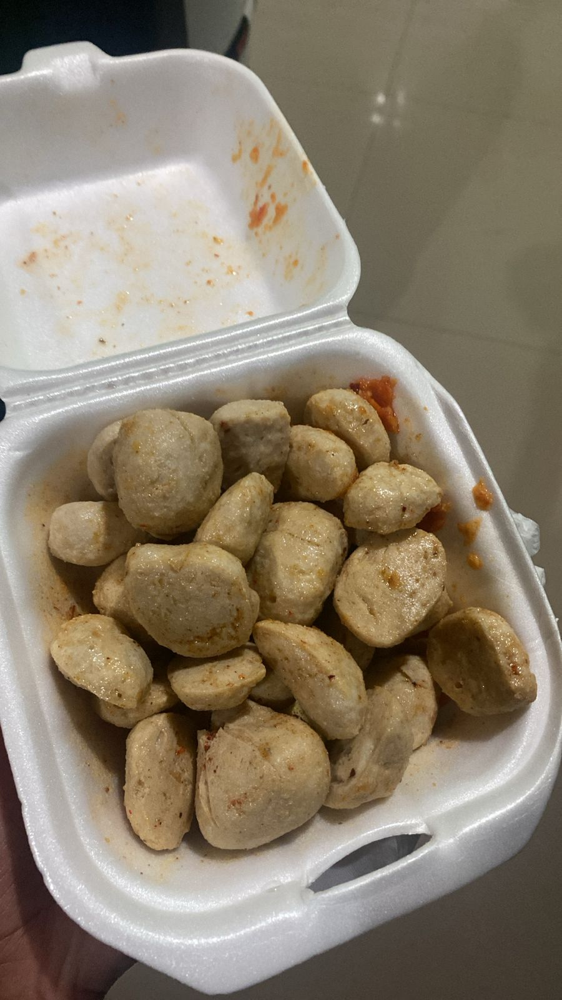
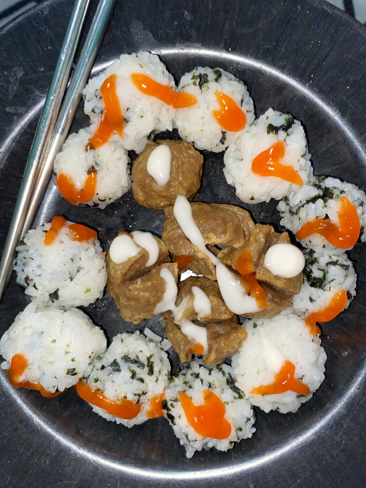
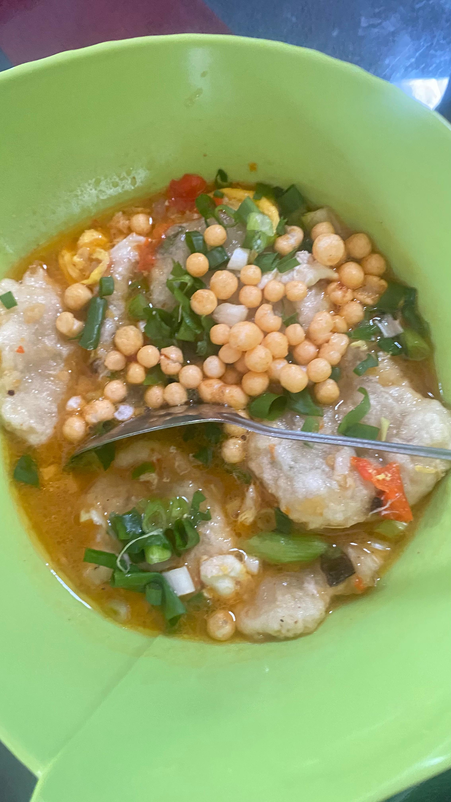

Halo Sayaanggg
Perayaan sederhana 1 bulan hubungan LDR kita
Sebelumnya aku mau nunjukin ini yang aku tulis di notepadku🤗
kenalin dia adalah Selviiaa
orang yang aku temui secara tak terduga
sekaligus orang yang aku suka secara tak terduga, tanpa sengaja dan tanpa direncanakan
aku sekarang mempunyai hubungan LDR dengannya
pertanyaan aneh yang sering kami lontarkan adalah "kenapa sih kita jauh?" membuktikan bahwa semuanya terjadi tanpa sengaja dan tanpa rencana
dia orangnya ngeselin, ngambekan, cemburuan. tapi yaa aku terima semua itu karena aku sayaaanggg bangeettt sama diaaa🥰🥰🥰.
Write on: 02 Januari 2026 11.48 PM
Ucapan😘
Selamaat sayaangg, selamat untuk kita yang sudah menjalani hubungan LDR ini udah 1 bulan, iyaaa udah 1 bulan lhooo. Tak terasa udah 1 bulan kita menjalani hubungan ini yaa, tapii ini baru permulaan, semoga hubungan kita langgeng sampai ke pernikahan yaa ayaanggg. Semoga kita bisa lebih baik kedepannya, bisa lebih saling mengerti, saling membantu, saling memahami, saling mencintai dan saling sayaangg🤗. Maaf yaa aku ucapin secara sederhana cuman lewat selembar website ini, semoga ayaangg bisa senang dengan selembar sederhana website iniii😁.
Pesan untukku🥰
Maaf yaa ayaangg selama ini aku banyak kurangnya, sering bikin ayangg ngambek (pas aku buat ini aja ayangg masih ngambek😅), kadang aku ngeselin, sering ngecewain juga, kurang peka, dan kurang ngertiin ayaangg. Aku akan berusaha untuk memperbaiki semua itu. Aku bersyukur banget punya ayaangg yang sabar dan mau nemenin prosesku. Bagiku, ayangg itu salah satu anugerah terindah dari tuhan yang diberikan kepadaku.
Pesan untuk ayangg🥰
Ayaangg hebat, ayaangg kuat, karena ayaangg selalu bersemangat untuk pergi mengajar anak anak TK, rela bangun pagi jam 3, berangkat pagi-pagi menempuh perjalanan puluhan kilometer setiap harinya. Walaupun ayaangg tau banyak banget rintangan dan cobaan yang ada di TK itu, tapii ayaangg selalu semangat dan ceria mengajar anak-anak TK. tetap semangat yaa sayaangg🤩🤩, mereka memang kadang bikin menghela nafas, tapii mereka anak anak koo😁, wajar yaaa, lagian ayaangg jugaa pas liburan ngeluh kangen sama mereka pas Desember 2025 kemarin🤗. Ayangg juga semangat kuliahnyaa🥰 (walaupun gaada fisik yekan🗿) tapii semangatt jugaa yaa untuk kuliahnyaa🤩. Semangat yaaaa sayaangg untuk mengejar karir ayaangg, aku dukung terus apa yang ingin ayangg capai🤗🥰. Aku sayaangggg bangettt sama ayaangggg😘.
oiyaaa aku ada sesuatu niii, geser pelan-pelan yaaaaa
Kepoo yaaaa digeser terus😗
Sabar yaaaa terus geser yanggg😂
Iya iyaaa dikit lagii muncul kooo😘, geser lagii yaaaa
Maaf yaa ayaangg geser-geser terus, capee yaaaa😗
tuuuuu ada di bawah inii
Aku ss note di ig lhooooo, aku reaksiin yaaa
ayaangg terharu gatau kenapa, bingung jadi aku kasih emote batu.
3 Des
iyaaa gituuuu yanggg, gatauu gitu nya tentang apaa🗿.
10 Des
maksudnyaa ayaangg itu lumayan tinggii (enggaa tinggi yaa).
18 Des
ayaangg waktu itu nyelesain tugas dan buat note itu, jadii aku ikut senaang.
19 Des
ayaangg ngejek (tapii lucuukk).
21 Des
waktu ituu aku lagi capee, tapii ayaangg nyemangatin akuuu.
22 Des
aoanyaaa yang 1 tahun yanggg?
27 Des
ayaangg yang gemaaassss.
28 Des
mungkin mangsud ayaangg hari pertama di tahun 2026.
1 Jan
biarkan emote yang menjelaskan.
18 Jan
awalnya typo sayoongg jadi yonggg, di kreasi jadi yuunggg huaaaaa.
19 Jan
geser lagi yaa pelan-pelan sampee mentok bawah.
baaaaaaaa, kaget gaaaaa?😂, geser yaaaa, semangatttt
ayoooo semangatttt
ayooo dikit lagiiii
stooopppppp, udah disinii, aku rating masakan ayaangg

ramen low budget tapi yang mahal idenya siiii.
cireng kering enaaakkkk, maoooooo. adaa saosnyaa sama daun buat hiasan, walaupun seuprit tapiii kreatif laaaa.

hmmm gatau yaaa tahu sama apaa tapii enaakk liatnyaaaa. btw pake bungkusan biar kek kesannya belii gituuu.
chiki + sayur = sehat, teruskan yaa ayaangg.


bakso goreng hmmmmm enaaakkkk, mauuuuuuu bakso goreng.
sederhana siii cuman nasi, bakso goreng, saos sama nori. tapii kreatifnyaa yang bikin tampilannyaa menarik bangettt.


ada cireng, ada tiktak (gatau sekarang abis apa enggaa), daun bawang sama kuah. hmmm pen cobaa deee cireng kuah.
baksoooooo aku sukaaaa, enak bangett ngeliatnyaa ajaa udaa ngiler.
nasgor goreng enaaakkkk, inget bangett waktu itu buat itu kek berjuang bangett terutama bagian ngehias hiasnyaaa iii sukaaaa.
Semangatt yaa ayanggg belajar masaknyaaa, jadii pen nyoba tiap hariii🤤. eittss masih ada lagiii
kali ini dikit kooo scrollnyaaa
tapiii boongg wleeeee
ayooo semangaattt
mangaatsss
cieeee masiii scrolll
iya iyaaa niii bawah ini adaaa
baaaaa, iyaa iniii plan bulan juni yaitu ketemua pertama nanti
Celosia
Celosia, tempat yang indah dan terdapat bermacam macam wahana. Akhir bulan juni kita akan kesana menikmati tiket terusan yang bebas mau naik apa saja.
Air Terjun Kedung Kayang
Air Terjun Kedung Kayang, air terjun dengan spot foto yang menakjubkan. Terdapat spot ikonik yaitu ada singgahan kayu kecil yang menempel di pohon.
Richeese Factory
Richeese Factory, kita akan makan ayam satu ekor disana.
Telaga Senjoyo
Telaga Senjoyo, telaga dengan segala keindahannya yang cocok untuk hunting foto banyak walaupun bayar.
Gunung Prau 2590 MDPL
Gunung Prau, kita disana akan menghatamkan 3u (Merbabu, Lawu dan Prau) bersama-sama, atau mungkin 4u (with u).
Coffee Shop
Coffee Shop, kita disana akan nongkrong, belajar bareng dan bikin video bareng
"Terima kasih ayaanggg telah membaca, semoga kita bisa bertemu sesuai yang kita plan yaitu akhir bulan juni 🥳🥳🥳". Aku sayaaangg bangeettt sama ayaanggggg🥰🥰🥰. Love youuuuu sayaangggggg😘.
Dibuat oleh si Engineer😁